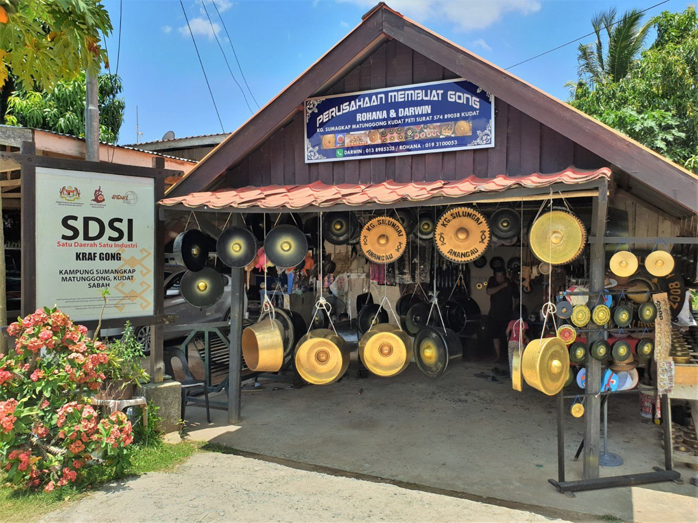

The village of Sumangkap is famous for its cottage industry of "Gong" making. "Gongs", either set horizontally in a frame or hang vertically, are the most important Rungus musical instrument and played on all festival occasions. Sheets of thick aluminium alloy are cut and beaten to form "gongs", which can be made to order with names or special symbols embossed upon them. The gong vary in size from tiny souvenir "gongs" up to a giant of almost 2 metrs across.
Read more

The gong is the most important Rungus musical instrument which is played during festivities and grand occasions such as weddings. The gongs that are sold in Kampung Sumangkap vary in sizes—visitors can expect to find tiny souvenirs ones with different shapes and unique designs (price ranging from RM25 to RM37) as well as large ones that can reach up to 2 meters wide in diameter.
Read more
For large groups of visitors, the villagers of Kampung Sumangkap will often hold cultural performances in the Kampung Sumangkap Community Hall where the kulintangan (a set of different sized gongs producing different sounds) is to be played. Here, visitors will also have the opportunity to witness the method of gong making by the professional gong makers in the village. The gong factory is open daily including public holidays from 8.30am to 5.30pm.
Entrance fees charged are as follows:
Adults (12 years and above) – RM5
Children (6 to 12 years old) – RM3
Children (below 6 years old) – Free of charge